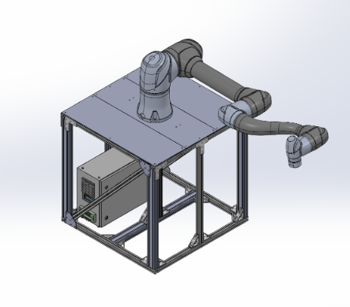
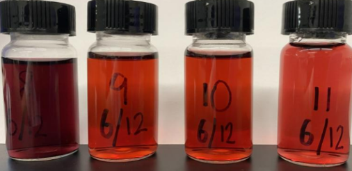
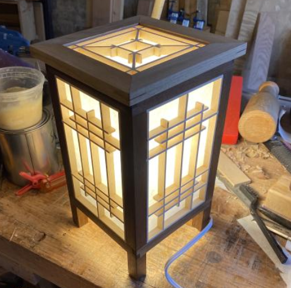
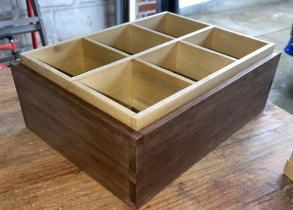
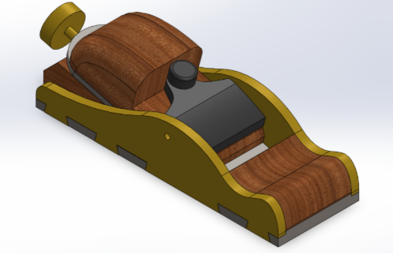
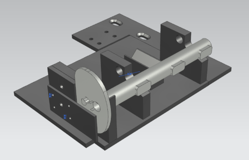

When I'm not focused on robotics, I like to spend time on other hobbies and research. This is a collection of some
of the other stuff I do.

Doosan H2515 Robot - Base
My first project in the PROOF Lab was to build a base for the robot to sit on. Made from 8020 extrusions, calculations made
with max payload in mind to ensure that the robot would not tip over. Supervised installation of robot onto base.
Skills
SolidWorks
Moment Calculations

Gold Nanoparticle Research
Got an opportunity to work on developing labs for E311 at Stevens over Summer 2023, a materials processing course.
Created gold nanoparticles using the Turkevich method and adjusted the size of the nanoparticles through adjusting the
concentration of sodium citrate solution.
Skills
Scanning Electron Microscopy
Spectrophotometry
Molarity Calculations
Turkevich Method

Kumiko Lamp
I wanted a cool study light for my room. Made from basswood and walnut, and the light is diffused via the shoji paper lined
on the Kumiko panels. Lamp is designed so that panels can be detached if broken.
Skills
Woodworking

Watch Box
Created a watch box using walnut and poplar. The edges of the box are dovetailed with a miter on the bottom to disguise a slot routed for the bottom panel.
Box designed to hold 6 watches comfortably, poplar was chosen as inner liner for its softer properties.
Skills
Woodworking
Joinery

Infill Block Plane
Worked in the machine shop over Summer 2023 mornings to make an infill block plane. Made from brass, steel, and wood, dovetails routed in brass using a CNC program.
Skills
CNC Machining
Fusion360
Machine Programming
SolidWorks
VGEORGE - Virtually Generated Engineered Organic Realistic George E-assistant (Name is a WIP)
I found a YouTube tutorial on home assistants and modified code to work for my needs. A neural network with natural language processing allows for vocal commands
to map to certain functions. For example, the weather function uses a weather API call to return the temperature and forecast of a preset location unless specified
otherwise. Other functions include a random number generator, timer, and search function.
Skills
Neural Networks
Pytorch
Bag of Words
NLP
Python
API Calls

Fixture for Holding Castings During Cutting Operation
Cutting operations for machine operators was manual, creating a dangerous work environment. Fixture was designed in Siemens NX and constructed from steel.
GD&T principles employed for drawings; machinists were super helpful in guiding me through machining tolerances. Final fixture deployed on floor, safely
securing tibial casting and resulting in hands-free operation. Swappable fixture allows fixtures for other part families to be used.